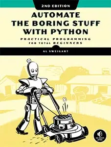
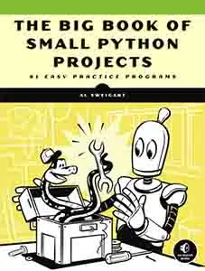
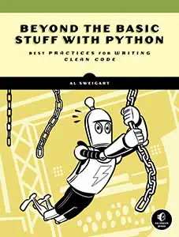
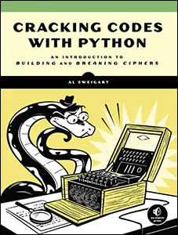
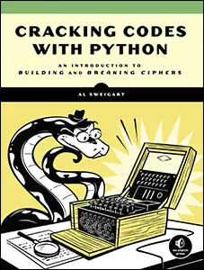
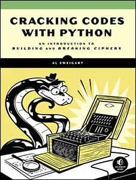

  
_files/cover_invent4th_thumb.webp)
_files/cover_makinggames_thumb.webp) 

_files/cover_scratchprogrammingplayground_thumb.webp)
_files/cover_codingwithminecraft_thumb.webp)
Use this link to get 70% off the Automate the Boring Stuff online video course.
Support me on Patreon

This program tests your reaction speed: press Enter as soon as you see the word DRAW. But careful, though. Press it before DRAW appears, and you lose. Are you the fastest keyboard in the west?
When you run fastdraw.py, the output will look like this:
Fast Draw, by Al Sweigart al@inventwithpython.com
Time to test your reflexes and see if you are the fastest
draw in the west!
When you see "DRAW", you have 0.3 seconds to press Enter.
But you lose if you press Enter before "DRAW" appears.
Press Enter to begin...
It is high noon...
DRAW!
You took 0.3485 seconds to draw. Too slow!
Enter QUIT to stop, or press Enter to play again.
> quit
Thanks for playing!The input() function
pauses the program while waiting for the user to enter a string. This
simple behavior means that we can’t create real-time games with just input(). However, your programs will buffer keyboard input, meaning that if you pressed the C, A, and T keys before input() is called, those characters will be saved, and they’ll appear immediately once input() executes.
By recording the time just before the input() call on line 22 and the time just after the input() call on line 24, we can determine how long the player took to press ENTER. However, if they pressed enter before input() was called, the buffered enter press causes input()
to return immediately (usually in about 3 milliseconds). This is why
line 26 checks if the time was less than 0.01 seconds, or 10
milliseconds, to determine that the player pressed enter too soon.
1. """Fast Draw, by Al Sweigart al@inventwithpython.com
2. Test your reflexes to see if you're the fastest draw in the west.
3. This code is available at https://nostarch.com/big-book-small-python-programming
4. Tags: tiny, beginner, game"""
5.
6. import random, sys, time
7.
8. print('Fast Draw, by Al Sweigart al@inventwithpython.com')
9. print()
10. print('Time to test your reflexes and see if you are the fastest')
11. print('draw in the west!')
12. print('When you see "DRAW", you have 0.3 seconds to press Enter.')
13. print('But you lose if you press Enter before "DRAW" appears.')
14. print()
15. input('Press Enter to begin...')
16.
17. while True:
18. print()
19. print('It is high noon...')
20. time.sleep(random.randint(20, 50) / 10.0)
21. print('DRAW!')
22. drawTime = time.time()
23. input() # This function call doesn't return until Enter is pressed.
24. timeElapsed = time.time() - drawTime
25.
26. if timeElapsed < 0.01:
27. # If the player pressed Enter before DRAW! appeared, the input()
28. # call returns almost instantly.
29. print('You drew before "DRAW" appeared! You lose.')
30. elif timeElapsed > 0.3:
31. timeElapsed = round(timeElapsed, 4)
32. print('You took', timeElapsed, 'seconds to draw. Too slow!')
33. else:
34. timeElapsed = round(timeElapsed, 4)
35. print('You took', timeElapsed, 'seconds to draw.')
36. print('You are the fastest draw in the west! You win!')
37.
38. print('Enter QUIT to stop, or press Enter to play again.')
39. response = input('> ').upper()
40. if response == 'QUIT':
41. print('Thanks for playing!')
42. sys.exit()
Try to find the answers to the following questions. Experiment with some modifications to the code and rerun the program to see what effect the changes have.
drawTime = time.time() on line 22 to drawTime = 0?timeElapsed > 0.3 on line 30 to timeElapsed < 0.3?time.time() - drawTime on line 24 to time.time() + drawTime?input('Press Enter to begin...') on line 15?